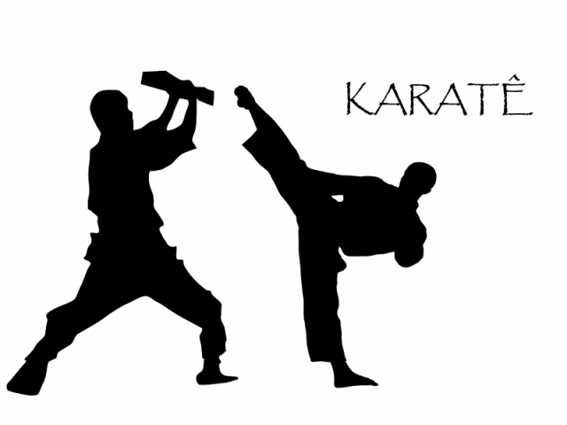

Кікбоксинг та Карате

Японія дізналася про карате лише наприкінці XIX ст. Оскільки японо-китайські відносини в той час були досить напруженими, китайське походження єдиноборства відкидалося. У 1936 році, напередодні японо-китайської війни, у слові «карате» ієрогліф «кара» (китайський) був замінений на співзвучний ієрогліф «кара» – «порожній». Крім того, до терміну було додано закінчення «до» – «шлях». Вийшло «карате-до» – «шлях порожньої беззбройної руки». Автором поняття «карате-до» вважається легендарний Фунакосі Гітін, засновник стилю «сетокан». Цікаво, що тренери іноді жартома перекладають «карате-до» як «шлях порожньої руки в порожню кишеню», натякаючи на те, що викладання карате рідко приносить багатство. Такий ось забавний факт!